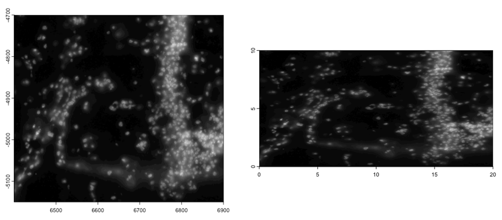
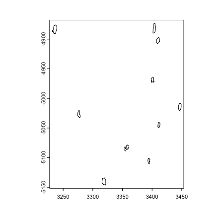
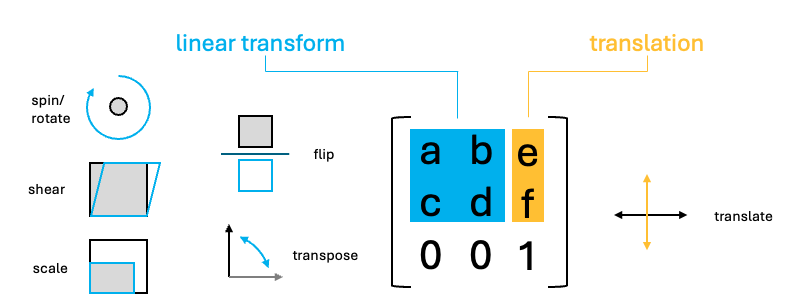
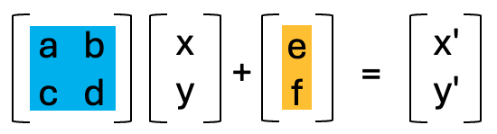
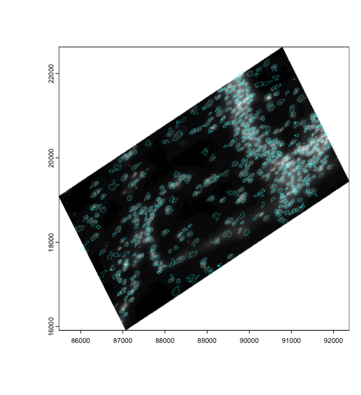
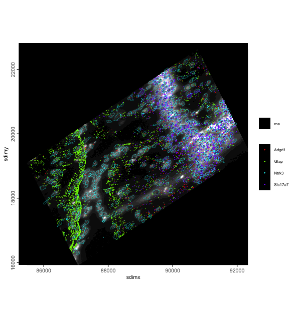

Example dataset: Vizgen’s Mouse Brain Receptor Map data release.
Some of the subobject data will be extracted to illustrate the transforms.
# Ensure Giotto Suite is installed
if(!"Giotto" %in% installed.packages()) {
pak::pkg_install("giotto-suite/Giotto")
}
# Ensure Giotto Data is installed
if(!"GiottoData" %in% installed.packages()) {
pak::pkg_install("giotto-suite/GiottoData")
}
library(Giotto)
g <- GiottoData::loadGiottoMini(dataset = "vizgen")
activeSpatUnit(g) <- "aggregate"
gpoly <- g[[, "aggregate"]][[1]]
gimg <- g[[, "dapi_z0"]][[1]]1 Overview
Spatial-omics data is defined both by the biological information that it contains and the way that it maps to space. When assembling and analyzing a spatial dataset, it may be necessary to spatially manipulate the data so that they are all in a common coordinate reference frame where all data is in at the same scaling and rotation, and properly overlaid.
Giotto extends a set of generics from terra in order to make it simple to figure out where data is in space and to move it where you need it.
1.1 Spatial transforms:
We support simple transformations and more complex affine transformations which can be used to combine and encode more than one simple transform.
1.3 Giotto spatial classes:
The following objects and subobjects are spatial objects and respond to the spatial manipulation functions on this page.
-
spatLocsObj- xy centroids -
spatialNetworkObj- spatial networks between centroids -
giottoPoints- xy feature point detections -
giottoPolygon- spatial polygons -
giottoImage(mostly deprecated) - magick-based images -
giottoLargeImage/giottoAffineImage- terra-based images -
affine2d- affine matrix container -
giotto- giotto analysis object
2 Examples
2.1 ext()
spatial bounds and extent
One of the most convenient descriptors of where an object is in space
is its minimal and maximal in the coordinate plane, also known as the
boundaries or spatial extent of that information. It
can be thought of as bounding box around where your information exists
in space. {Giotto} incorporates usage of the SpatExtent
class and associated ext() generic from {terra} to describe
objects spatially.
2.1.1 Getting extent
Works for all spatial objects
ext(gimg) # giottoLargeImageSpatExtent : 6400.029, 6900.037, -5150.007, -4699.967 (xmin, xmax, ymin, ymax)
ext(gpoly) # giottoPolygonSpatExtent : 6399.24384990901, 6903.24298517207, -5152.38959073896, -4694.86823300896 (xmin, xmax, ymin, ymax)The giotto analysis object finds the searches through
all objects of the spat_unit. It returns an extent that
encompasses everything it found. You can set prefer to
limit the search to specific types of data. Allowed terms are “polygon”,
“spatlocs”, “points”, “images”.
ext(g) # all data for default spat unit ("aggregate")SpatExtent : 6391.46568586489, 6903.57332779812, -5153.89721175534, -4694.86823300896 (xmin, xmax, ymin, ymax)SpatExtent : 6400.037, 6900.0317, -5149.9834, -4699.9785 (xmin, xmax, ymin, ymax)2.1.2 Setting Extent
Directly set the spatial extent of objects. This changes the object
by reference for giottoPolygon,
giottoPoints, and giottoLargeImage inheriting
objects. In order to avoid changing the object everywhere it is being
used, copy() should be run.
Setting the extent is supported for all objects except
spatialNetworkObj (since they may contain additional
statistics that normally should be recalculated from the raw spatial
locations after a transform) and the giotto object as
whole.
-
affine2dis also an exception sinceext()<-assigns the anchoring spatial extent instead of what might otherwise be expected.
plot(gimg)
gimg_copy <- copy(gimg)
ext(gimg_copy) <- c(0, 20, 0, 10) # xmin, xmax, ymin, ymax
plot(gimg_copy)SpatExtent : 0, 20, 0, 10 (xmin, xmax, ymin, ymax)
plot(gpoly)
gpoly_copy <- copy(gpoly)
ext(gpoly_copy) <- c(0, 20, 0, 10) # xmin, xmax, ymin, ymax
ext(gpoly_copy)
plot(gpoly_copy)SpatExtent : 0, 20, 0, 10 (xmin, xmax, ymin, ymax)
2.2 XY()
accessing spatial coordinates
Spatial coordinates for can be directly retrieved and replaced for
giottoPoints, giottoPolygon, and
spatLocsObj. The coordinates when retrieving or being set
should be of class matrix.
# point-type data
sl <- g[["spatial_locs"]][[1]] # spatLocsObj
sl_mini <- sl[1:10]
XY(sl_mini) x y
[1,] 6405.067 -4780.499
[2,] 6426.020 -4972.519
[3,] 6428.456 -4799.158
[4,] 6408.155 -4816.583
[5,] 6425.894 -4862.808
[6,] 6426.858 -5070.148
[7,] 6413.179 -5109.696
[8,] 6402.438 -5112.440
[9,] 6428.358 -5046.636
[10,] 6410.095 -5094.962
# polygon-type data
gpoly_mini <- gpoly[1:10]
gpoly_mini_xy <- XY(gpoly_mini)
head(gpoly_mini_xy, 10) # provides individual vertices (not separated by poly_ID) x y
[1,] 6642.257 -5136.674
[2,] 6642.711 -5137.020
[3,] 6643.050 -5137.462
[4,] 6643.310 -5137.956
[5,] 6643.484 -5138.518
[6,] 6643.589 -5139.191
[7,] 6643.584 -5139.974
[8,] 6643.687 -5140.649
[9,] 6643.805 -5141.326
[10,] 6643.663 -5142.028
# edit coordinate matrix and return to object
gpoly_mini_xy[, "x"] <- gpoly_mini_xy[, "x"] / 2
XY(gpoly_mini) <- gpoly_mini_xy
plot(gpoly_mini)
2.3 Simple transforms
Plots demonstrating no transform, spatShift(),
spin(), rescale(), flip(),
t(), and shear() usage. The blue rectangle
marks out the original spatial extent that the data occupied (if it
would still be within the field of view).
rain <- sample(rainbow(nrow(gpoly)))
line_width <- 0.3
e <- ext(gpoly)
# par to setup the grid plotting layout
p <- par(no.readonly = TRUE)
par(mfrow=c(3,3))
gpoly |>
plot(main = "no transform", col = rain, lwd = line_width)
plot(e, add = TRUE, border = "blue")
gpoly |> spatShift(dx = 1000) |>
plot(main = "spatShift(dx = 1000)", col = rain, lwd = line_width)
plot(e, add = TRUE, border = "blue")
gpoly |> spin(45) |>
plot(main = "spin(45)", col = rain, lwd = line_width)
plot(e, add = TRUE, border = "blue")
gpoly |> rescale(fx = 10, fy = 6) |>
plot(main = "rescale(fx = 10, fy = 6)", col = rain, lwd = line_width)
plot(e, add = TRUE, border = "blue")
gpoly |> flip(direction = "vertical") |>
plot(main = "flip()", col = rain, lwd = line_width)
plot(e, add = TRUE, border = "blue")
gpoly |> t() |>
plot(main = "t()", col = rain, lwd = line_width)
plot(e, add = TRUE, border = "blue")
gpoly |> shear(fx = 0.5) |>
plot(main = "shear(fx = 0.5)", col = rain, lwd = line_width)
plot(e, add = TRUE, border = "blue")
par(p)
2.4 Affine transforms
The above transforms are all simple, but you can imagine that performing them in sequence on your dataset can be computationally expensive.
Luckily, the above operations are all affine transformation, and they can be condensed into a single step. Affine transforms where the x and y values undergo a linear transform. These transforms in 2D, can all be represented as a 2x2 matrix or 2x3 if the xy translation values are included.

To perform the linear transform, the xy coordinates just need to be matrix multiplied by the 2x2 affine matrix. The resulting values should then be added to the translate values.

Due to the nature of matrix multiplication, you can simply multiply the affine matrices with each other and when the xy coordinates are multiplied by the resulting matrix, it performs both linear transforms in the same step.
Giotto provides a utility affine2d S4 class that can be
created from any affine matrix and responds to the affine transform
functions to simplify this accumulation of simple transforms.
Once done, the affine2d can be applied to spatial
objects in a single step using affine() in the same way
that you would use a matrix.
# create affine2d
aff <- affine() # when called without params, this is the same as affine(diag(c(1, 1)))The affine2d object also has an anchor spatial extent,
which is used in calculations of the translation values.
affine2d generates with a default extent, but a specific
one matching that of the object you are manipulating (such as that of
the giottoPolygon) should be set.
# append several simple transforms
aff <- aff |>
spatShift(dx = 1000) |>
spin(45, x0 = 0, y0 = 0) |> # without the x0, y0 params, the extent center is used
rescale(10, x0 = 0, y0 = 0) |> # without the x0, y0 params, the extent center is used
flip(direction = "vertical") |>
t() |>
shear(fx = 0.5)
force(aff)<affine2d>
anchor : 6391.46568586489, 6903.57332779812, -5153.89721175534, -4694.86823300896 (xmin, xmax, ymin, ymax)
rotate : -0.785398163397448 (rad)
shear : 0.5, 0 (x, y)
scale : 10, 10 (x, y)
translate : 978.859285884871, 7071.06781186547 (x, y)The show() function displays some information about the
stored affine transform, including a set of decomposed simple
transformations.
You can then plot the affine object and see a projection of the spatial transform where blue is the starting position and red is the end.
plot(aff)
We can then apply the affine transforms to the
giottoPolygon to see that it indeed in the location and
orientation that the projection suggests.

2.4.1 Affine image transforms
Giotto uses giottoLargeImages as the core image class
which is based on terra SpatRaster. Images are not loaded
into memory when the object is generated and instead an amount of
regular sampling appropriate to the zoom level requested is performed at
time of plotting.
spatShift() and rescale() operations are
supported by terra SpatRaster, and we inherit those
functionalities. spin(), flip(),
t(), shear(), affine() operations
will coerce giottoLargeImage to
giottoAffineImage, which is much the same, except it
contains an affine2d object that tracks spatial
manipulations performed, so that they can be applied through
magick::image_distort() processing after sampled values are
pulled into memory. giottoAffineImage also has alternative
ext() and crop() methods so that those
operations respect both the expected post-affine space and
un-transformed source image.
# affine transform of image info matches with polygon info
plot(affine(gimg, aff))
plot(affine(gpoly, aff), add = TRUE, border = "cyan", lwd = 0.3)
2.4.2 Affine
giotto object transforms
Giotto objects can be transformed using affine()
gaffine <- affine(g, aff)
spatInSituPlotPoints(gaffine,
show_image = TRUE,
feats = list(rna = c("Adgrl1", "Gfap", "Ntrk3", "Slc17a7")),
feats_color_code = rainbow(4),
polygon_color = "cyan",
polygon_line_size = 0.1,
point_size = 0.1,
use_overlap = FALSE
)
3 Session Info
R version 4.4.1 (2024-06-14)
Platform: aarch64-apple-darwin20
Running under: macOS 15.0.1
Matrix products: default
BLAS: /System/Library/Frameworks/Accelerate.framework/Versions/A/Frameworks/vecLib.framework/Versions/A/libBLAS.dylib
LAPACK: /Library/Frameworks/R.framework/Versions/4.4-arm64/Resources/lib/libRlapack.dylib; LAPACK version 3.12.0
locale:
[1] en_US.UTF-8/en_US.UTF-8/en_US.UTF-8/C/en_US.UTF-8/en_US.UTF-8
time zone: America/New_York
tzcode source: internal
attached base packages:
[1] stats graphics grDevices utils datasets methods base
other attached packages:
[1] Giotto_4.2.0 GiottoClass_0.4.7
loaded via a namespace (and not attached):
[1] tidyselect_1.2.1 viridisLite_0.4.2 farver_2.1.2
[4] dplyr_1.1.4 GiottoVisuals_0.2.11 fastmap_1.2.0
[7] SingleCellExperiment_1.26.0 lazyeval_0.2.2 digest_0.6.37
[10] lifecycle_1.0.4 terra_1.7-78 magrittr_2.0.3
[13] compiler_4.4.1 rlang_1.1.4 tools_4.4.1
[16] igraph_2.1.1 utf8_1.2.4 data.table_1.16.2
[19] knitr_1.49 S4Arrays_1.4.0 labeling_0.4.3
[22] htmlwidgets_1.6.4 reticulate_1.39.0 DelayedArray_0.30.0
[25] abind_1.4-8 withr_3.0.2 purrr_1.0.2
[28] BiocGenerics_0.50.0 grid_4.4.1 stats4_4.4.1
[31] fansi_1.0.6 colorspace_2.1-1 ggplot2_3.5.1
[34] scales_1.3.0 gtools_3.9.5 SummarizedExperiment_1.34.0
[37] cli_3.6.3 rmarkdown_2.29 crayon_1.5.3
[40] generics_0.1.3 rstudioapi_0.16.0 httr_1.4.7
[43] rjson_0.2.21 zlibbioc_1.50.0 parallel_4.4.1
[46] XVector_0.44.0 matrixStats_1.4.1 vctrs_0.6.5
[49] Matrix_1.7-0 jsonlite_1.8.9 GiottoData_0.2.15
[52] IRanges_2.38.0 S4Vectors_0.42.0 ggrepel_0.9.6
[55] scattermore_1.2 magick_2.8.5 GiottoUtils_0.2.3
[58] plotly_4.10.4 tidyr_1.3.1 glue_1.8.0
[61] codetools_0.2-20 cowplot_1.1.3 gtable_0.3.6
[64] GenomeInfoDb_1.40.0 GenomicRanges_1.56.0 UCSC.utils_1.0.0
[67] munsell_0.5.1 tibble_3.2.1 pillar_1.9.0
[70] htmltools_0.5.8.1 GenomeInfoDbData_1.2.12 R6_2.5.1
[73] evaluate_1.0.1 lattice_0.22-6 Biobase_2.64.0
[76] png_0.1-8 backports_1.5.0 SpatialExperiment_1.14.0
[79] Rcpp_1.0.13-1 SparseArray_1.4.1 checkmate_2.3.2
[82] colorRamp2_0.1.0 xfun_0.49 MatrixGenerics_1.16.0
[85] pkgconfig_2.0.3